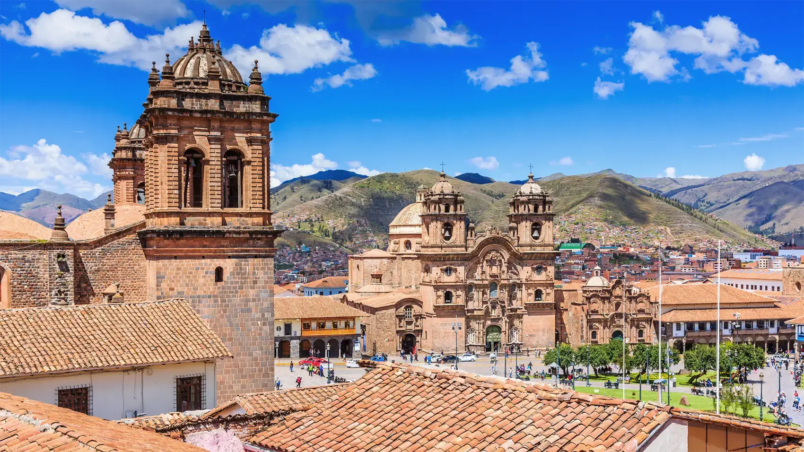

馬丘比丘 Machu Picchu
約於公元 1450 年由印加皇帝帕查庫特克下令興建，海拔約 2,430 米，包含神殿、梯田與水利系統，1911 年由美國學者海勒姆．賓厄姆向外界披露。1983 年列入世界文化遺產，2007 年獲選為新世界七大奇蹟之一。為保護遺址，每日入場人數有上限，必須提前在官方網站購票，並按指定時段入場。

秘魯 PERU
庫斯科（Cusco）在印加人的克丘亞語中意為「肚臍」，被視為世界的中心。這座城市約於十二世紀開始發展，到十五世紀印加帝國（Tawantinsuyu）鼎盛時期，帝國版圖沿安地斯山脈南北延伸超過四千公里，庫斯科就是它的首都與宗教核心。
1533 年，西班牙人皮薩羅攻陷庫斯科，拆毀印加神廟與宮殿，並直接在原有的巨石牆基上興建天主教堂與殖民建築，形成今日「下面印加、上面西班牙」的獨特街景。1950 年的一場大地震嚴重損毀市區，其後逐步重建。1983 年，聯合國教科文組織把「庫斯科古城」列入世界文化遺產。
庫斯科至今仍是安地斯原住民文化的重心。市內隨處可見身穿傳統服飾的婦女牽著羊駝，紡織品的幾何圖案記錄著家族與社區的身份。每年六月二十四日的太陽祭 Inti Raymi 是最重要的節慶，會在薩克塞華曼的草地上重演印加祭祀儀式；當地人亦會向大地之母 Pachamama 獻祭，感謝土地賜予收成。
飲食方面，秘魯是馬鈴薯的原鄉，品種超過三千種，配上玉米、藜麥與辣椒；ceviche、lomo saltado 與烤天竺鼠 cuy 都是常見菜式。殖民時期形成的庫斯科畫派（Escuela Cusqueña）也為這座城市留下大量帶有本地色彩的宗教繪畫。
由印加石工到高山湖泊，庫斯科周邊的景色落差極大。點擊相片可以放大欣賞。
約於公元 1450 年由印加皇帝帕查庫特克下令興建，海拔約 2,430 米，包含神殿、梯田與水利系統，1911 年由美國學者海勒姆．賓厄姆向外界披露。1983 年列入世界文化遺產，2007 年獲選為新世界七大奇蹟之一。為保護遺址，每日入場人數有上限，必須提前在官方網站購票，並按指定時段入場。
位於庫斯科城北的山丘上，最令人驚訝的是以多邊形巨石精密拼接而成的城牆——石塊之間不用任何灰漿，卻密得連刀片都插不進去，最大的一塊估計重逾三百噸。這裡同時是每年太陽祭 Inti Raymi 的舉行地點，從城牆上可以俯瞰整個庫斯科市區。
印加帝國最重要的神廟，供奉太陽神 Inti，昔日外牆與內殿曾覆滿金箔。西班牙人佔領後把神殿拆毀，直接在印加石牆上興建聖多明我修道院，形成兩種建築疊在一起的畫面。今日仍可清楚看到印加人打磨得極光滑的石工，與上層的殖民建築形成強烈對比。
位於庫斯科東南約三小時車程，海拔約 5,036 米，因不同礦物層經風化後露出而呈現紅、黃、綠、紫的條紋，近年成為熱門景點。由於海拔極高，建議先在庫斯科適應一至兩日才前往，出發前亦要留意自身有無高山症狀。
用四天的行程，看看庫斯科與馬丘比丘實際走起來是什麼樣子。